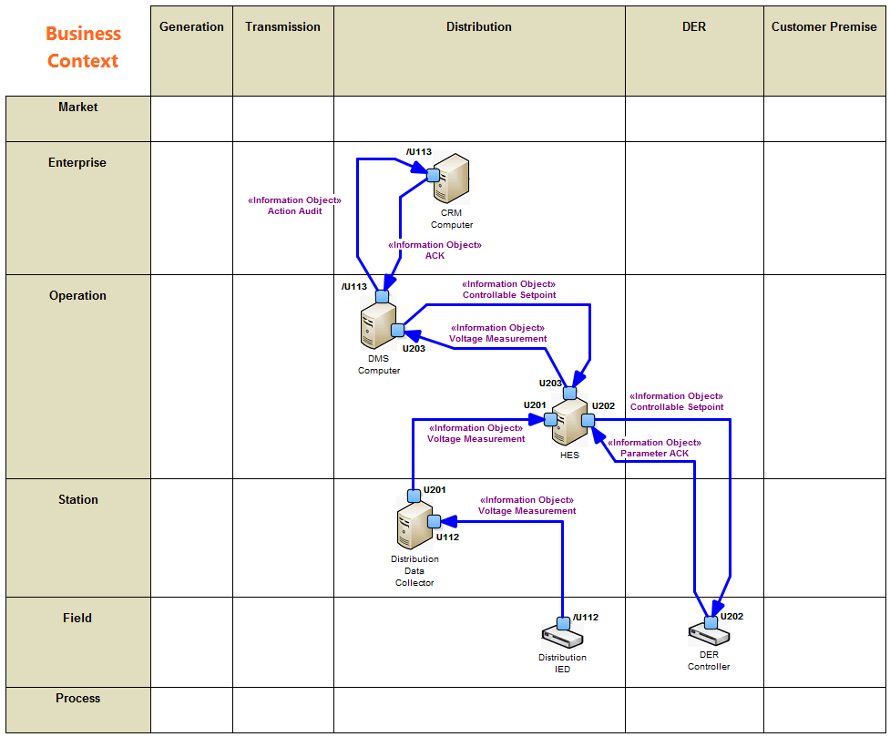
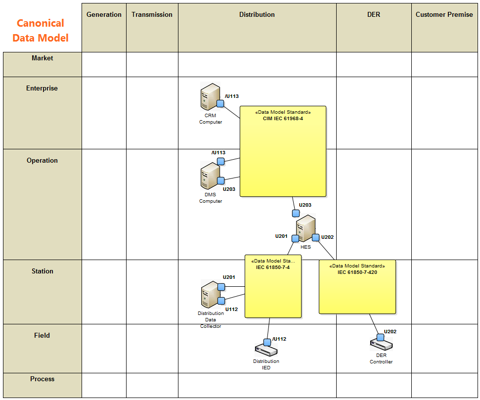

System Architecture - Information Layer
The instantiation of the physical components together with their instantiated security requirements states the basis for the architectural development. In a first step the Business Context View as part of the SGAM Information Layer can be developed. This view aims at depicting the Information Object Flows among the participating physical components and can be derived by considering (1) the detailed description of all involved PUC's and (2) the mapping from Logical Actors onto Physical Components. Figure 1 depicts the Business Context View for the "Control Reactive Power of DER" HLUC.

Figure 1. SGAM Information Layer: Business Context View.
The second specified view on the SGAM Information Layer is the Canonical Data Model. This view deals with the assignment of appropriate data model standards to be used. Selecting the best fitting standard requires detailed considerations. As discussed in Section Standards Mapping, the IEC Smart Grid Standards Mapping Tool can deliver guidance for choosing appropriate standards. However, for the given example mainly CIM and IEC 61850 related standards have been selected as can be seen in Figure 2.

Figure 2. SGAM Information Layer: Canonical Data Model.